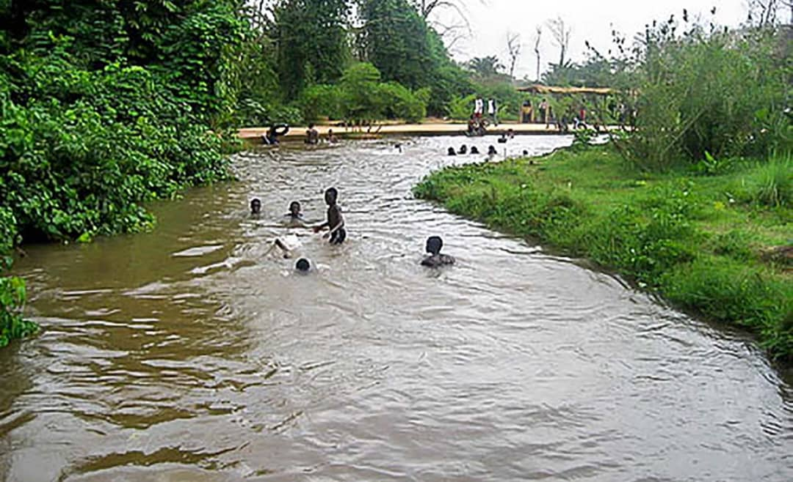
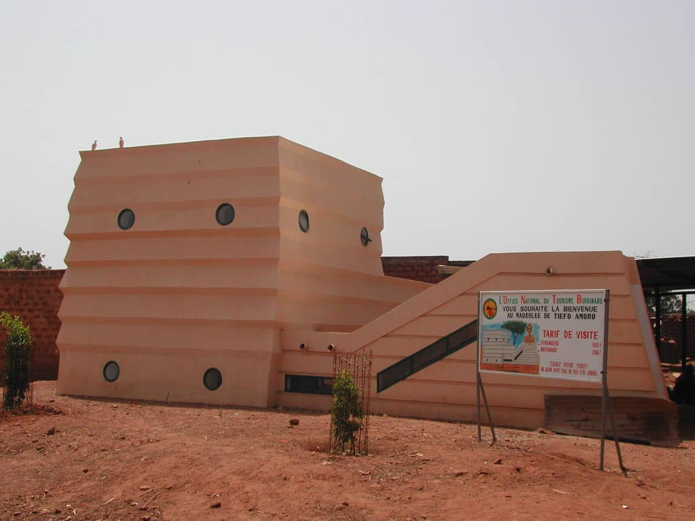
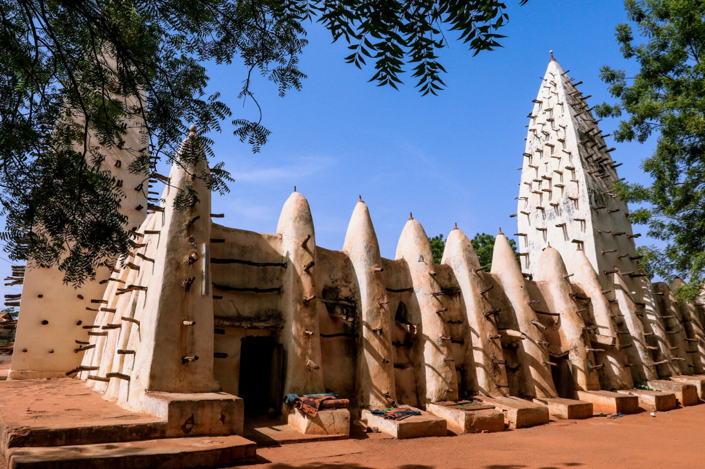

Ensembles de photo des sites patrimoniaux de Bobo-Dioulasso
La Guinguette de Nasso

Le Marché Central de BOBO-DIOULASSA
Le Mausolée Tiéfo Amoro

Le Mausolée Guimbi Ouattara
Le Musée Communal Sogossira Sanou
La Place Tiéfo Amoro
Les Silures Sacrée de Dafra
La Chatédrale Notre Dame de Lourdes
Le Village de Koro
La Grande Mosquée de Dioulasso-Bâ

La Place de la Femme
Le Rond-point du Paysans
Le Marché de FRuits et Legumes
La Maison de la Culture
La Semaine Nationale de la Culture
Lac au Caïman Sacrée de Sabou